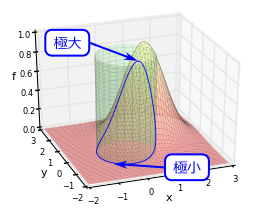
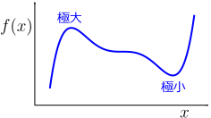
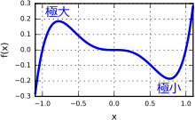
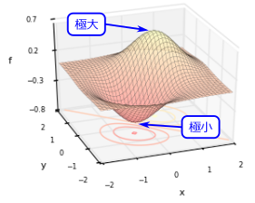
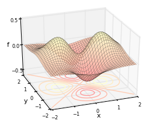
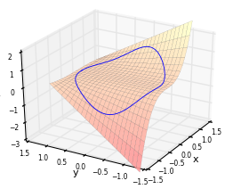
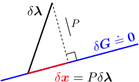
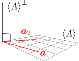

制約条件付き極値問題

制約条件付き極値問題とは、例えば、右図の青曲線上での極大・極小を求める問題である。この青曲線は、元のグラフである赤曲面に対して、
の取り得る範囲を、単位円上（緑の円筒に対応）に制限したものである。このように、元のグラフの定義域に制約が入っている時の極大・極小を求めたいわけである。
この章では、まず復習として、制約条件がない場合を扱い、その後、本題に入る。
変数関数の極値問題多変数関数の極値問題制約条件付き極値問題
また、「制約条件付き」極値問題を「制約条件のない」極値問題に変換する手法である、ラグランジュの未定乗数法についても述べる。なお、「極値問題」という代わりに、同じような文脈で、「最大・最小問題」や「最適化問題」と言ったりもする。
9.11変数関数の極値問題
まず、制約がない場合の極値問題から始める。この節では、1変数関数の停留条件()を導く。
1変数関数の停留条件：式()

知りたいのは、右図のように、ある関数
が極大または極小となる点
（＝極値点）である。同図からも分かるように、極値点では、グラフの接線の傾きが
になる。このように接線の傾きが0になる点のことを、停留点という。この「接線の傾きが
」という条件（＝停留条件）を書き下したい。
接線を考えるということは、1次近似を考えればよい。任意の点
の周辺で
を1次近似すると、
の変化量
は以下のように書ける：（力学編第1章の【1.1-注1】）
停留点条件は、「
を変化させても
が変化しないこと」、即ち、「赤字部分が
」である：
この停留条件()を満たす解
を全て求めれば、その中に全ての極値点が含まれることになる（
の定義域の境界に極値点がある場合は満たさないことがある）。ただし、停留条件は、あくまで接線の傾きが0になるための条件なので、その解が極値点になるとは限らない（以下の例題参照）。
例題

例として、右図の関数
の極値点を求める。停留条件()は
となる。よって停留点は、この解となる3点
である。
同図より、
は極小点、
は極大点であり、
はどちらでもない。（得られた停留点が実際に極値点になっているかどうかの判定は、グラフを見て行うこととし、深入りはしないことにする。）
9.2多変数関数の極値問題
この節では、停留条件()を多変数関数の場合に拡張し、停留条件()を導く。まだ制約条件は考えない。
多変数関数の停留条件：式()

右図のような多変数関数
の極値点を知りたい。図からもわかるように、極値点では、グラフの接平面の傾きが
（＝水平）となっている。即ち、この場合も、接平面の傾きが
という停留条件を考えればよい（前節の「接線」を「接平面」に置き換えるだけ）。
1変数の場合と同様に、任意の点
の周辺での1次近似を考えると、以下のようになる：（力学編第3章の【3.2-注2】）
停留条件は、「任意の
に対して
」、即ち、「赤字部分が
」である：
全ての極値点
は、この停留条件()の解となる（定義域の境界の極値点を除く）。ただし前節と同様い、この式を満たす
が全て極値点であるとは限らない（以下の例題参照）。
例題

例として、右図の関数
の極値点を求める。停留条件()は
となる。よって停留点は、この解となる5点
である。
同図より、
は極大点、
は極小点である。しかし、
はどちらでもない（鞍点という）。鞍点（あんてん）という名称は、馬の鞍のようなグラフになっていることに由来するが、グラフの形状によらず、極大や極小でない点は全て鞍点という。
9.3制約条件付き極値問題
さて、ようやくここで制約条件を課した場合を扱う。この節では、制約条件を課した時の停留条件が、式()で与えられることを見る。また、制約条件がない場合の極値問題に変換する手法である、ラグランジュの未定乗数法（【9.3-注3】）についても述べる。
素直に書き下した停留条件()→分かりづらい
右図は、冒頭の図と同じものである。この青曲線上での極値問題を考えたいわけである。青曲線は、赤曲面
の定義域を緑の円柱
上に制約したもの（＝2つのグラフが交わる部分）である。
同図からもわかるように、極値点ではやはり、青曲線の接線の傾きが0になっている。よって、制約条件がない場合と同様、「接空間（接線や接平面の総称）の傾きが0」という停留条件を考えればよいことになる。即ち、（制約条件を満たす）任意の
に対して、
は
となる：
ただし、
には制約条件
がかかっているので、
は、その拘束条件を満たすものに限られる。
よって考えるべきは、
が満たすべき条件である。今の例では制約条件は1つだけだが、より変数が多い場合には複数あってもよいので、制約条件をベクトル表記しておく：
に対する条件は、点
から
だけ移動したときに、制約条件()が破れないこと、即ち
である。
以上をまとめると、停留条件は
制約条件を満たす全てのにおいて、式が成り立つ
こととなる。しかし、このままでは分かりづらい。
接空間の基底ベクトルが分かれば、停留条件は式()
式()を満たす
の集合が張る空間の基底ベクトルが分かっていれば、停留条件()を簡単な式に書き換えることができる。実際、
は、基底ベクトル
の1次結合：
で表すことができるので、これを式()に代入し、係数
が任意の値をとれることに注意すると、
の係数がゼロになることが分かる：
これが、基底
が既知の場合の停留条件である。
実際に
を求めるには、
の全てと直交するベクトル
を
（の要素数）－（制約条件の数）
の個数だけ見つけてくればよい（もちろん1次独立なもの）。以上の手順を以下の【9.3-注1】にまとめておく。手計算で解ける簡単な問題であれば、この方法で十分である。そうでない複雑な問題では、ラグランジュの未定乗数法（以下の【9.3-注3】）などを用いて数値的に解くことになる。
【9.3-注1】制約条件付き極値問題の解法
変数
が取れる値に制約条件
がかかっているとする。このもとでの、関数
の極値点を求めたい。
解法
まず、
の全てと直交するベクトル
（1次独立）を
（の要素数）－（制約条件の数）
（＝
の自由度）だけ見つける。これらを並べた行列を
とおく：
求める極値点は、停留条件：
と制約条件()からなる連立方程式の解である。（ただし、この解が全て極値点になるわけではない。鞍点が含まれる可能性がある。）
例題

例として、右図の青線上の極値点を求める。これは、関数
に対して、単位円型の制約条件
を課したものである。
まず、制約条件
の微分は
である。停留条件()の
として、
と垂直なベクトルを取ればよいので
としよう。これと、
の微分
を使えば、停留条件()は
となる（途中で制約条件
を使って、
を消去した）。
停留点は式()の解なので、
に関して
である。
については制約条件()から決まる。こうして得られる4点
が停留点である。上図より、
は極小点、
は極大点であり、
は鞍点である。
なお、この問題は、極座標
を使うと
に関する制約無し極値問題に帰着でき、より簡単に解ける。このように、制約条件を簡単に消去できないか考えることも有用である。
補足：正射影行列()を用いると、停留条件は式()
式()の導出の議論を参考にするならば、
を、何らかの制約されていないベクトル
を用いて
と書ければ、停留条件は
となるわけである。このような都合の良い行列
を、
から直接作れないだろうか（直交ベクトルを求めることなく）。

結論から言うと、
として、制約条件の接空間（右図の青色部分）への正射影行列を考えればよい。そうすると右図のように、任意のベクトル
に対し、
は制約条件
を満たす。逆に、節空間上の制約条件を満たすあらゆる
は
の形に書ける（
とするだけである）。
正射影行列
は
を用いて書き下すことができる。実際、接空間は
が張る空間
の直交補空間なので（以下の【9.3-注2】の式()において、
を
とすることで）
となる。以上により、停留条件は以下のようになる：（見やすくするために式()の転置を取った）
この式を幾何学的に解釈すると、「制約がない場合のグラフの接空間」と「制約条件のグラフの接空間」の共通部分（＝接空間）の傾きがゼロになるということである（きれいな式だが、これを直接使って解くことはまずない）。
【9.3-注2】正射影行列

複数の1次独立なベクトル
をまとめて、行列
で表す。
が張る空間（＝
の形でかけるベクトルの集合が作る空間）を
とおき、
の直交補空間（＝
と直交するベクトルの集合が作る空間）を
とおく（右図）。
この時、
への正射影行列
および、
への正射影行列
は、以下のようになる：
補足
実際に、
が正射影行列になっていることを確かめてみる（
についても同様なので省略）。そのためには、任意のベクトル
を、
の要素
と
の要素
に分解：
した時に、
かつ
となることを言えばよい。まず、
については、
の形で表せることより
また、
については
よって、確かに成立している。
補足：ラグランジュの未定乗数法
上述の制約条件付き極値問題は、制約条件の無い極値問題（9.2節）に変換できることが知られている。そのようにして何が嬉しいかというと、コンピュータを用いて数値的に問題を解く場合に、「制約条件の無い極値問題で使われる優れた計算手法」（準ニュートン法など）が、そのまま流用できるのである。（制約条件の有無にかかわらず、停留条件が解析的に解けることはあまりないので、多くの場合コンピュータを用いて数値的に解くことになる。）
方法は簡単で、以下の【9.3-注3】のようにすればよい。即ち、ラグランジュ関数()を定義し、制約のない停留条件()の解を求めれば、その時の
は、制約条件
を満たしており、かつ、元の制約条件付き極値問題の停留点にもなっている。
【9.3-注3】ラグランジュの未定乗数法
まず、ラグランジュ関数と呼ばれる量
を
と定義する。次に、
が自由な値をとれるとして、
の停留条件を考える：
（
は
での微分、
は
での微分。）するとこの解は、制約条件
を満たし、かつ、停留点になる。
この手法をラグランジュの未定乗数法といい、
を未定乗数（あるいはラグランジュの未定乗数）という。
証明
停留条件()をあらわに書くと
となる。第2成分は、制約条件
そのものである。従って、第1成分が停留条件()と等価であることを言えばよい。
まず、式()の第1成分に正射影行列
（式()）を左乗すると、停留条件()に一致する。よって、式()⇒式()。逆に、停留条件()が成り立っている時
とおけば、式()の第1成分の式が成り立つ。よって、式()⇒式()。